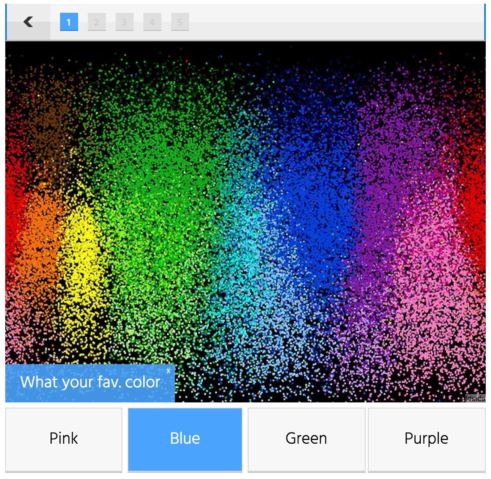

What Is Your REAL Name?
What your fav. color?
What fashion are you?
Do you like having fun?
Can We Guess Your Age And Gender From These 10 Questions? and Can We Guess Your Age And Where You Live Based On Your Taste In Music?
Can Your Favorite Colors Reveal Where You Are From?
What Country Best Suits Your Personality?
Can we guess your profession?
What career should you actually have
Which Winner Of “RuPaul’s Drag Race” Are You?
I am an italian girl in her late teens called Heather. I am a wine taster but want to be a professor and live in England. My spirit drag queen is Violet Chatchki.
Thank you